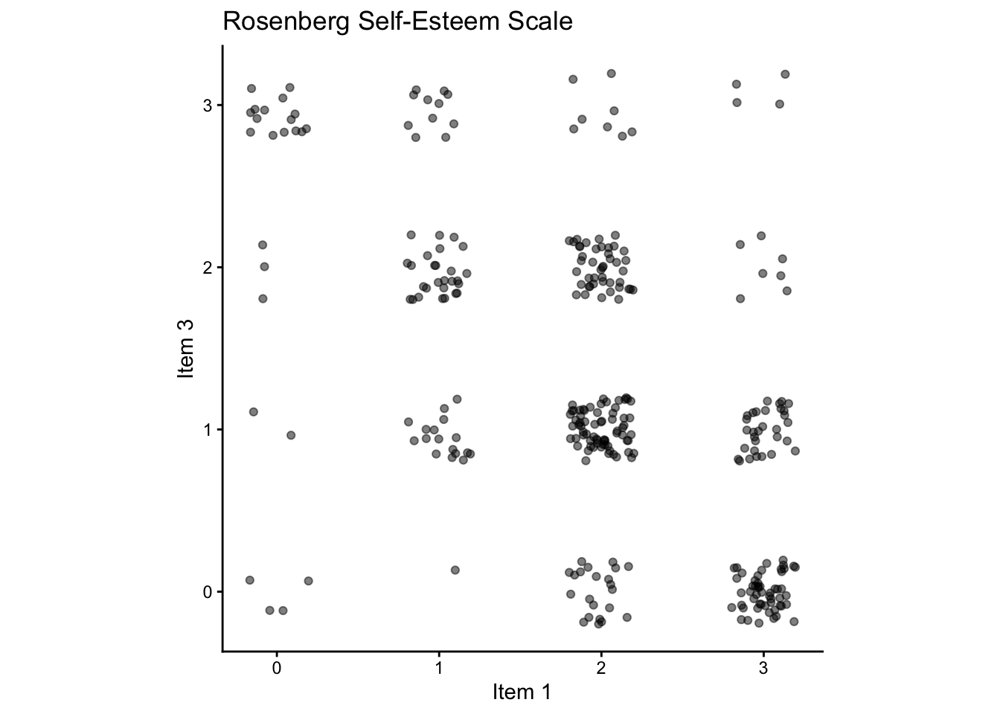

library(tidyverse) # for data wrangling and visualization
library(psych) # for describe() and scoreItems()
library(broom) # for tidying model output
library(papaja) # for APA style write up
library(BrailleR) # for accessibility
GoBlind()Lab 2: Measurement Reliability
In this lab, we will explore the concepts of measurement reliability. Measurement is a critical aspect of empirical research, and it is the foundation for drawing valid conclusions from data. Measurement reliability is important if we want to compare one measurement to another, because the relationship between two different variables can’t be any stronger than the relationship between either of the variables and itself (i.e., its reliability). This means that an unreliable measure can never have a strong statistical relationship with any other measure. For this reason, researchers developing a new measurement (such as a new survey) will often go to great lengths to establish and improve its reliability.
This lab will use Rosenberg Self-Esteem Scale (Rosenberg 1965) to demonstrate how to assess reliability of measurement.
Learning Objectives
- Understand the concepts of reliability in measurement.
- Produce a scatter plot to visualize the relationship between two items in a scale.
- Calculate Cronbach’s α to assess internal consistency of a scale.
- Calculate composite scores for a scale.
- Interpret what the results of reliability mean in the context of research.
- Write up the results of reliability analyses in the APA style.
1 Preliminaries
Load the necessary packages for data wrangling, visualization, and analysis.
2 Data
Data for this lab comes from a sample of 318 adults between the ages of 18 and 26 who completed the Rosenberg Self-Esteem Scale (RSES) from the Open-Source Psychometrics Project. The items are measured on a 4-point Likert scale (0=Strongly Disagree, 1=Disagree, 2=Agree, 3=Strongly Agree).
| Item Number | Item Text | Reverse Scored? |
|---|---|---|
| 1 | I feel that I am a person of worth, at least on an equal plane with others. | Regular |
| 2 | I feel that I have a number of good qualities. | Regular |
| 3 | All in all, I am inclined to feel that I am a failure. | Reversed |
| 4 | I am able to do things as well as most other people. | Regular |
| 5 | I feel I do not have much to be proud of. | Reversed |
| 6 | I take a positive attitude toward myself. | Regular |
| 7 | On the whole, I am satisfied with myself. | Regular |
| 8 | I wish I could have more respect for myself. | Reversed |
| 9 | I certainly feel useless at times. | Reversed |
| 10 | At times I think I am no good at all. | Reversed |
Let’s take a look at the data. We will read in the data using a function called read_csv() from the tidyverse package.
df <- read_csv('data/rses.csv') %>%
as_tibble()
NoteMore Notes on Pipe Operator
The above code chunk uses the pipe operator %>% to pass the output of read_csv() function to as_tibble() function. This is the same as the following two options:
Option 2: Use a intermediate object intermediate_output to save the output of the read_csv function. The con of this approach is that you will need to create and manage an additional object in your environment.
intermediate_output <- read_csv('data/rses.csv')
df <- as_tibble(intermediate_output)Option 3: Instead of using a pipe operator, you can directly pass the output of the read_csv function to the as_tibble function.
df <- as_tibble(read_csv('data/rses.csv'))All three options achieve the same result, but the first option with pipe operator is more readable and easier to understand.
Option 3 is concise, but it is less readable. If you will need this intermediate output for other purposes, then Option 2 is a good choice. However, if this is a one-off operation, then you don’t need to create another object just to pass the output of read_csv() to as_tibble(). In this case, Option 1 is the best choice.
Because we will be using the tibble with the data throughout the lab, we will save it as an object called df.
To check if the data is loaded correctly, and what variables the data contains, there are a couple of different ways to inspect the data.
2.1 View the first few rows of the data: head()
It will be quite overwhelming to look at all 318 rows of the data, so we will use head() function to view the first few rows of the data.
kable() function from the knitr package is used to print the output in a nice table format in your Quarto document.
head(df) %>%
knitr::kable() # print the output in a nice table| RSES01 | RSES02 | RSES03 | RSES04 | RSES05 | RSES06 | RSES07 | RSES08 | RSES09 | RSES10 | Gender | Age |
|---|---|---|---|---|---|---|---|---|---|---|---|
| 2 | 2 | 1 | 2 | 2 | 2 | 2 | 2 | 2 | 2 | Female | 21 |
| 0 | 2 | 2 | 2 | 3 | 1 | 1 | 2 | 3 | 2 | Female | 22 |
| 1 | 0 | 2 | 1 | 2 | 1 | 1 | 1 | 2 | 2 | Male | 22 |
| 2 | 2 | 0 | 2 | 0 | 2 | 2 | 0 | 0 | 0 | Female | 25 |
| 2 | 2 | 0 | 2 | 1 | 3 | 3 | 0 | 0 | 0 | Female | 24 |
| 2 | 2 | 1 | 2 | 1 | 2 | 2 | 1 | 1 | 1 | Female | 22 |
2.2 Inspect the variables as rows: glimpse() from tidyverse
If you are like me, and you find it easier to read the variables as rows instead of columns, then you can use glimpse() function to inspect the structure of the dataset. As a bonus, you get to see the data type of each variable as well (more on this later).
Let’s use glimpse() function to inspect the structure of the dataset.
glimpse(df)Rows: 318
Columns: 12
$ RSES01 <dbl> 2, 0, 1, 2, 2, 2, 0, 2, 2, 3, 3, 2, 2, 2, 2, 3, 3, 3, 1, 2, 3, …
$ RSES02 <dbl> 2, 2, 0, 2, 2, 2, 3, 2, 3, 3, 2, 2, 2, 2, 2, 3, 2, 2, 1, 2, 3, …
$ RSES03 <dbl> 1, 2, 2, 0, 0, 1, 1, 0, 2, 0, 1, 1, 2, 0, 2, 0, 3, 1, 2, 1, 0, …
$ RSES04 <dbl> 2, 2, 1, 2, 2, 2, 2, 2, 3, 2, 2, 1, 1, 3, 2, 2, 1, 2, 2, 3, 2, …
$ RSES05 <dbl> 2, 3, 2, 0, 1, 1, 3, 0, 1, 0, 2, 2, 2, 0, 1, 1, 2, 1, 2, 1, 0, …
$ RSES06 <dbl> 2, 1, 1, 2, 3, 2, 1, 2, 1, 2, 1, 1, 0, 2, 2, 2, 0, 2, 1, 2, 3, …
$ RSES07 <dbl> 2, 1, 1, 2, 3, 2, 1, 2, 0, 3, 1, 1, 1, 2, 2, 2, 0, 2, 1, 2, 2, …
$ RSES08 <dbl> 2, 2, 1, 0, 0, 1, 3, 1, 3, 1, 2, 1, 2, 2, 2, 0, 3, 2, 1, 3, 0, …
$ RSES09 <dbl> 2, 3, 2, 0, 0, 1, 3, 1, 0, 0, 2, 3, 2, 1, 2, 2, 3, 1, 2, 3, 0, …
$ RSES10 <dbl> 2, 2, 2, 0, 0, 1, 2, 0, 2, 0, 1, 2, 2, 0, 2, 1, 3, 1, 2, 3, 0, …
$ Gender <chr> "Female", "Female", "Male", "Female", "Female", "Female", "Fema…
$ Age <dbl> 21, 22, 22, 25, 24, 22, 19, 23, 22, 21, 24, 25, 20, 21, 18, 21,…2.3 Get summaries of the data: describe() from the psych package
Use describe() function from the psych package to get a summary of the data.
describe(df) %>%
knitr::kable() | vars | n | mean | sd | median | trimmed | mad | min | max | range | skew | kurtosis | se | |
|---|---|---|---|---|---|---|---|---|---|---|---|---|---|
| RSES01 | 1 | 318 | 1.971698 | 0.8822564 | 2 | 2.058594 | 1.4826 | 0 | 3 | 3 | -0.6046485 | -0.3069237 | 0.0494745 |
| RSES02 | 2 | 318 | 2.062893 | 0.7957738 | 2 | 2.140625 | 0.0000 | 0 | 3 | 3 | -0.7111108 | 0.2770670 | 0.0446248 |
| RSES03 | 3 | 318 | 1.242138 | 0.9636212 | 1 | 1.179688 | 1.4826 | 0 | 3 | 3 | 0.3045642 | -0.8831482 | 0.0540372 |
| RSES04 | 4 | 318 | 1.823899 | 0.7905961 | 2 | 1.859375 | 0.0000 | 0 | 3 | 3 | -0.4428267 | -0.0877090 | 0.0443344 |
| RSES05 | 5 | 318 | 1.305031 | 0.9974920 | 1 | 1.257812 | 1.4826 | 0 | 3 | 3 | 0.2767405 | -0.9810994 | 0.0559366 |
| RSES06 | 6 | 318 | 1.569182 | 0.9498099 | 2 | 1.585938 | 1.4826 | 0 | 3 | 3 | -0.1760090 | -0.8944552 | 0.0532627 |
| RSES07 | 7 | 318 | 1.477987 | 0.9619675 | 2 | 1.472656 | 1.4826 | 0 | 3 | 3 | -0.0967033 | -0.9743481 | 0.0539445 |
| RSES08 | 8 | 318 | 1.713836 | 1.0030853 | 2 | 1.765625 | 1.4826 | 0 | 3 | 3 | -0.3418719 | -0.9482246 | 0.0562502 |
| RSES09 | 9 | 318 | 1.698113 | 0.9873312 | 2 | 1.746094 | 1.4826 | 0 | 3 | 3 | -0.3508546 | -0.8930046 | 0.0553668 |
| RSES10 | 10 | 318 | 1.509434 | 1.0317846 | 2 | 1.511719 | 1.4826 | 0 | 3 | 3 | -0.0853182 | -1.1525482 | 0.0578596 |
| Gender* | 11 | 318 | 1.176101 | 0.3815061 | 1 | 1.097656 | 0.0000 | 1 | 2 | 1 | 1.6926641 | 0.8678704 | 0.0213938 |
| Age | 12 | 318 | 21.069182 | 2.3472099 | 21 | 20.902344 | 2.9652 | 18 | 26 | 8 | 0.4803703 | -0.7374325 | 0.1316250 |
From this output, you can find some aspects of the data. For example, n is the number of responses (data entries) for each variable, and mean is the average response. You can also find the minimum and maximum values for each variable. For today’s purposes, we will focus on these three colums: n, min, and max. We want to make sure that the data is complete (no missing values) and that all items are in the expected range (0-3 for RSES).
NoteData Inspection Checklist
- Are data complete (no missing values or wrong data)?
- Are all items in the expected range?
3 Reliability (internal consistency)
Good measurement is reliable, and the measurement of the same construct should produce similar results across different items (internal consistency), different time points (test-retest reliability), or different raters (inter-rater reliability).
In today’s lab, we will focus on internal consistency. Let’s say we want to measure Self-Esteem. What we want to obtain from our measurement is some score that represents Self-Esteem for an individual. But we don’t just ask one question “Do you have high self-esteem?” for many reasons. For one, increasing the amount of data helps us be more accurate and more confident in our measurement. People may make mistakes when answering a single question and can be influenced by other things outside of the question itself (maybe they are distracted by notifications on their phones). To guard against this, we ask multiple questions that are supposed to measure the same construct. For example, in RSES, we ask multiple questions that measure self-esteem: “I feel that I am a person of worth, at least on an equal plane with others.” (Item 1) and “All in all, I am inclined to feel that I am a failure.” (Item 3). If someone has high self-esteem, they will strongly agree with the first statement and strongly disagree with the second statement. If someone has low self-esteem, they will strongly agree with both statements. But what if someone strongly agrees with both statements? Then we have a problem, and the scale is not reliable to use.
To summarize, we want to check if the items are internally consistent and correlated with each other. We will first inspect pairs of items, and then quantify overall internal consistency of the scale.
3.1 Inspect pairs of items
3.1.1 Scatter plots
We will first create a scatter plot of the items to visually inspect their relationships. If the items are internally consistent, we should see a pattern of positive correlation between them. As we discussed above, Items 1 and 3 are supposed to measure the same construct, but they are worded in opposite directions. Therefore, we expect to see a negative correlation between these two items. We will create a scatter plot of Items 1 and 3 to visualize their relationship.
For this, we will use ggplot() function from the ggplot2 package to create a scatter plot. We will map the first item (RSES01) to the x-axis and the third item (RSES03) to the y-axis. So what do we do with the mapped data? We need to specify what else needs to happen with that data. For ggplot(), we keep adding layers to the plot using + operator. For example, we can add a layer to the plot that adds points to the plot using geom_point() function. We can also add a layer that adds a regression line to the plot using geom_smooth() function.
Since the responses are on a 4-point Likert scale, we will use geom_jitter() to add some random noise to the points so that we can see the distribution of the responses more clearly.
# create a scatter plot of the items
df %>%
ggplot(aes(x = RSES01,
y = RSES03)) + # map the first item to the x-axis and the third item to the y-axis
geom_jitter(alpha = 0.5, width = 0.2, height = 0.2) + # add some random noise to the points so individual dots are visible
labs(x = "Item 1", # add label to the x-axis
y = "Item 3", # add label to the y-axis
title = "Rosenberg Self-Esteem Scale") + # add title to the plot
coord_fixed(ratio = 1) + # make the x and y axes have the same ratio
theme_classic() # use a classic theme for the plot
This chart has title 'Rosenberg Self-Esteem Scale'.
It has x-axis 'Item 1' with labels 0, 1, 2 and 3.
It has y-axis 'Item 3' with labels 0, 1, 2 and 3.
The chart is a set of 318 big solid circle points of which about 89% can be seen.
It has alpha set to 0.5.3.1.2 Correlation coefficient
We see a bunch of dots, but we would like to quantify the trend in the data. We can do this by calculating the correlation coefficient between the two items.
What’s the correlation between the two items? We can calculate the correlation using cor() function. To look at a specific variable (column) in a data frame, we can use the $ operator. For example, to look at the first item (RSES01), we can use df$RSES01. To look at the third item (RSES03), we can use df$RSES03. We can then pass these two variables to the cor() function to calculate the correlation between them. Think of this cor() function as something like the sqrt() function that we used in Lab 1. The sqrt() function takes a number as input and returns the square root of that number. Similarly, the cor() function takes two variables as input and returns the correlation between them.
# calculate the correlation between the two items
cor(df$RSES01, df$RSES03)[1] -0.5262346
NoteRounding Numbers
If the number you got is a little too long and have many decimal places, you can round the number to 3 decimal places using round() function. For example, if you want to round the correlation to 3 decimal places, you can use round(cor(df$RSES01, df$RSES03), 3). Alternatively, you can use the pipe operator %>% to pass the output of cor() function to round() function. For example, cor(df$RSES01, df$RSES03) %>% round(3).
TipExercise 1
Choose two items from RSES that are expected to be positively correlated and create a scatter plot of the two items. Report the correlation between the two items. Are the two items positively correlated? If not, what could be the reason?
Choose two items from RSES that are expected to be negatively correlated and create a scatter plot of the two items. Report the correlation between the two items. Are the two items negatively correlated? If not, what could be the reason?
3.2 Quantify overall internal consistency with Cronbach’s α
We use Cronbach’s α (read as “Cronbach’s alpha”) to quantify the internal consistency. If Cronbach’s α is greater than or equal to 0.7, we can say that the items are internally consistent and reliable. Ideally, we want to see Cronbach’s α to be greater than 0.8, but this is not always the case in practice.
We will create an array of keys, where the items that need to be reverse scored are prefixed with a minus sign (-). For example, for the third item “All in all, I am inclined to feel that I am a failure.”, we will use -3 to indicate that this third item needs to be reverse scored.
For this example, we will only look at the first five items.
rses.keys <- list(RSES = c(1, 2, -3, 4, -5))
NoteList
This is a data structure called a list. A list is a collection of objects that can be of different types. What is important to note here is that we can specify a name for each element in the list (in this case, RSES is the name of the first element in the list). We can access the elements in the list using the $ operator. For example, to access the first element in the list, we can use rses.keys$RSES. This will return a vector of numbers that represent the items in RSES that need to be scored.
rses.keys$RSES
[1] 1 2 -3 4 -5rses.keys$RSES[1] 1 2 -3 4 -5With the keys defined, we can now score the items in RSES using scoreItems() function from the psych package. This function will calculate the composite scores and also calculate Cronbach’s α for the scale.
# score the items in RSES (columns that start with "RSES") using the keys defined above
rses <- scoreItems(
keys = rses.keys,
items = df %>% select(starts_with("RSES")),
totals = TRUE
)
NoteFunction With Named Arguments
So far, the functions that we took one or two inputs. For example, cor() function takes two inputs (two variables) and round() function takes two inputs (a number and the number of decimal places to round to). However, some functions can take multiple inputs. For example, scoreItems() function takes three inputs: keys, items, and totals. The first input is the keys that we defined above, the second input is the items in RSES that we want to score, and the third input is a logical value that indicates whether we want to calculate the total scores for each participant. In this case, we set totals = TRUE to calculate the total scores for each participant.
When you specify the input arguments with their names (e.g., keys = rses.keys), it is called named arguments. This is useful when a function takes multiple inputs, and you want to specify which input corresponds to which argument. If you don’t specify the names of the arguments, the function will assume that the inputs are in the order that they are defined in the function. If you don’t specify the names of the arguments, you can still use the function, but it is less readable and more prone to errors. For example, if you want to use scoreItems() function without named arguments, you can achieve the same result as above with the following code:
rses <- scoreItems(rses.keys, df %>% select(starts_with("RSES")), TRUE)It is less readable because you have to remember the order of the arguments, and it is more prone to errors because you can easily mix up the order of the arguments. Therefore, it is a good practice to use named arguments when a function takes multiple inputs.
3.2.1 Composite scores
You can find the RSES scores for each participant under scores in the rses object. $ operator is used to accuess the scores in the rses object. The scores is a data frame that contains the composite scores for each participant. We can convert the scores to a tibble for easier inspection.
# convert the scores to a tibble
rses.scores <- rses$scores %>%
as_tibble()
head(rses.scores) %>%
knitr::kable()| RSES |
|---|
| 9 |
| 5 |
| 4 |
| 12 |
| 11 |
| 10 |
We can now summarize the RSES scores with some descriptive statistics (e.g., what’s the average?) We are getting ahead of ourselves a little bit, but the point here is that we can use the describe() function from the psych package to get a summary of the RSES scores.
describe(rses.scores) %>%
knitr::kable()| vars | n | mean | sd | median | trimmed | mad | min | max | range | skew | kurtosis | se | |
|---|---|---|---|---|---|---|---|---|---|---|---|---|---|
| RSES | 1 | 318 | 9.311321 | 3.536283 | 10 | 9.503906 | 2.9652 | 0 | 15 | 15 | -0.4856107 | -0.3072232 | 0.1983049 |
3.2.2 Internal consistency (Cronbach’s alpha)
Now this is what we wanted to do all along. Let’s check internal consistency of the scale. For this, we will examine the Cronbach’s α for the RSES scale. We can access the Cronbach’s α values from the rses object.
TipQuestions to answer about the data:
- Is the RSES scale internally consistent (Cronbach’s alpha >= 0.7)?
# check the Cronbach's alpha for the RSES scale
rses$alpha %>%
round(3) %>% # round the Cronbach's alpha to 3 decimal places
knitr::kable()| RSES | |
|---|---|
| alpha | 0.854 |
3.2.3 Write up the results
We will now write up the results of the reliability analysis. The reliability analysis is conducted to justify the use of a measure in research, and thus the results of reliability analysis is usually reported in the method section of a research paper, following the description of the measure:
We used the Revised Self-Esteem Scale (RSES) to measure self-esteem. RSES is a brief measure of self-esteem, with 10 items. Participants rated the extent to which they agreed with each statement on a 4-point Likert scale (0 = Strongly Disagree, 3 = Strongly Agree). Composite scores were calculated by summing the responses across the first five items with reverse scoring applied to the appropriate items (Items 3, 5).
Following this description, you would report the results of the reliability analysis. The write-up should include the purpose of the analysis (to assess internal consistency), the method used (Cronbach’s α), and the results of the analysis (the Cronbach’s α value), and the interpretation of the results (good, acceptable, or poor internal consistency). For example:
Reliability analysis using Cronbach’s α showed that the RSES had good internal consistency (α = .85).
TipReliability Analysis Write-Up Checklist
- What type of reliability is measured? (e.g., internal consistency)
- What method is used to assess reliability? (e.g., Cronbach’s α)
- What are the results of the analysis? (e.g., Cronbach’s α values for the scale)
- What is the interpretation of the results? (e.g., good? acceptable? poor?)
TipExercise 2
Repeat the reliability analysis for the RSES using all 10 items. Write up the results of the reliability analysis in APA style in your own words. You can use the example write-up above as a guide, but do not copy it verbatim. Make sure to include the description of the scale and how the score was calculated, the purpose of the analysis, the method used, the results of the analysis, and the interpretation of the results.
Key Takeaways
- Internal consistency is a type of reliability that measures consistency of items within a scale, and it can be assessed using Cronbach’s α.
- Cronbach’s α values greater than or equal to 0.7 indicate acceptable internal consistency, while values less than 0.7 indicate poor internal consistency.
scoreItems()function from thepsychpackage can be used to calculate composite scores for a scale and also calculate Cronbach’s α.
3.3 Additional Notes
NoteAn Alternative Way to Calculate Composite Scores
Can you guess how you can calculate the composite scores without using scoreItems() function? If you thought about just adding up the scores for each item, then you are correct! For example, to calculate the composite scores for the first five items in RSES, you can use the following code, which should give you the same results as the scoreItems() function.
composite_scores <- df$RSES01 + df$RSES02 + (3 - df$RSES03) + df$RSES04 + (3 - df$RSES05)
head(composite_scores) %>%
knitr::kable()| x |
|---|
| 9 |
| 5 |
| 4 |
| 12 |
| 11 |
| 10 |
Note that we need to reverse score the appropriate items (Items 3 and 5) by subtracting the scores from 3. This is because the items are scored on a 4-point Likert scale (0-3), and we want to reverse the scoring for the items that are negatively worded.
If this feels like a lot of work, you can use the function scoreItems() from the psych package to do this for you. This function takes care of reverse scoring and calculating the composite scores for you. It also calculates Cronbach’s α for the scale, so that is a bonus! I just wanted to show you that you don’t need all these bells and whistles to calculate composite scores, but it is nice to have them when you are doing research.
References
Rosenberg, Morris. 1965. Society and the Adolescent Self-Image. Vol. 11. Princeton university press Princeton, NJ.